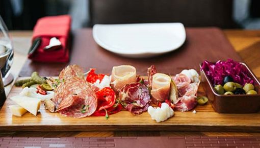
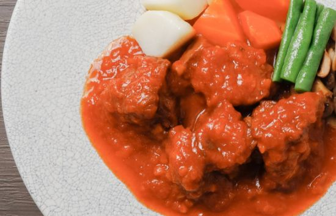
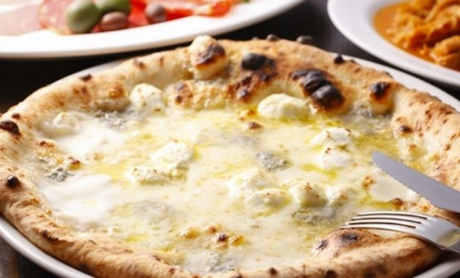
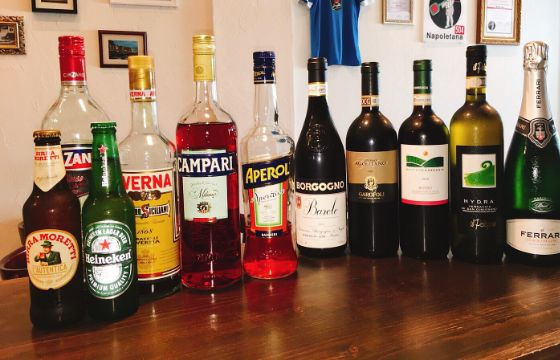
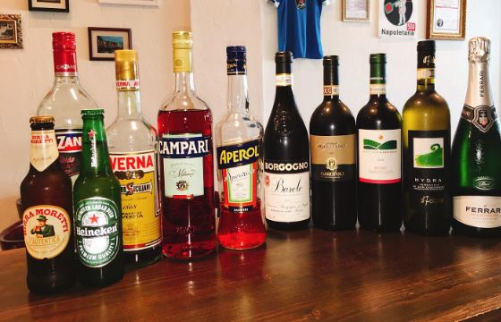
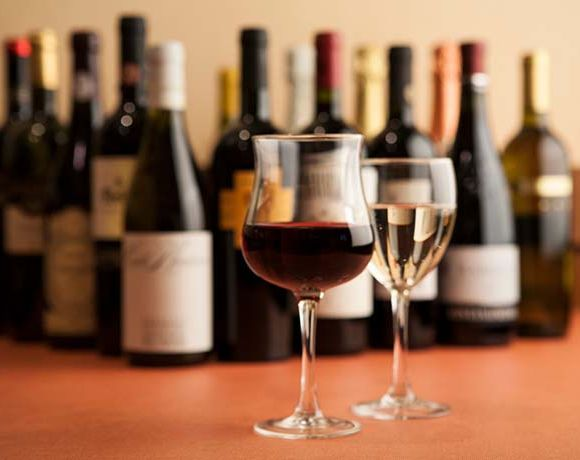

Antipasti
―― 前菜メニュー 一例 ――
- 前菜の盛り合わせ 2名様～
-
シチリア産グリーンオリーブ
400 円 -
自家製ピクルス
400 円 -
手作り県産ドライトマトのオイル漬け
400 円 -
じゃが芋のロースト
600 円
-
沖縄県産/黒皮カジキの燻製 カルパッチョ
800 円 -
牛モツと白いんげん豆の煮込み（トリッパ）
980 円 -
カプレーゼ
1,300 円 -
(水牛モッツァレラチーズとミニトマトのサラダ)

Secondi Piatti
― メイン 一例 ―
-
仔羊のシチリア風香草トマト煮込み
1,780 円 - もとぶ牧場直送
低温調理したもとぶ牛の薄切りサラダ仕立て
1,980 円
- カルツォーネ
1,800 円 - カプリチョーザ
1,700 円 -
(トマトソース・モッツァレラ・バジリコ・ハム・オリーブ・グラナパダーノ)

- Filetto フィレット
1,500 円 -
（モッツァレラ・ミニトマト・バジリコ・グラナパダーノ）
- Salsiccia e Broccoli サルシッチャ エ ブロッコリー
1,700 円 -
（モッツァレラ・自家製ソーセージ・ブロッコリー・グラナパダーノ）
- Prosciutto e Rucola プロシュート エ ルッコラ
1,900 円 -
（モッツァレラ・生ハム・ルッコラ・グラナパダーノ）
Pizza (Bianca)
― モッツァレラベース 一例 ―
- 4 Formaggi クアトロフォルマッジ
1,800 円 -
（モッツァレラ・ゴルゴンゾーラ・リコッタ・パルミジャーノ）
- DOC ドック
2,000 円 -
（水牛モッツァレラ・ミニトマト・バジリコ・グラナパダーノ）
- Bismark ビスマルク
1,700 円 -
（モッツァレラ・イタリア産ハム・半熟たまご・グラナパダーノ）
 

Aperitivo
― 食前酒 一例 ―
- スプリッツァ
600 円 -
（白ワイン+ソーダ
- キールロワイヤル
700 円 -
（カシス+スパークリングワイン）
- ミモザ
700 円 -
（ブラッドオレンジジュース+スパークリングワイン）
- キール
600 円 -
（カシス+白ワイン）
- カシスブラッドオレンジ
700 円 - アペロール
600 円 -
（ロック又はソーダ）
アペロールとはイタリア産のハーブ系リキュールです。

Vinoal calice
― グラスワイン・スパークリング ―
- Spumante della casa
600 円 -
（スパークリングワイン）
- Vino della casa
500 円～ -
（グラスワイン 赤／白）
- Vino della casa
2,000 円～ -
（カラフェ 赤／白）
Digestivo
― 食後酒 ―
- レモンチェッロ
600 円 - シークワサーチェッロ
600 円 - サンブーカ
600 円
- アマーロ
600 円 - グラッパ
800 円～